Armários: madeira → branco
Mesmo ambiente, ângulos diferentes. Comparação lado a lado; não usar slider sobreposto.
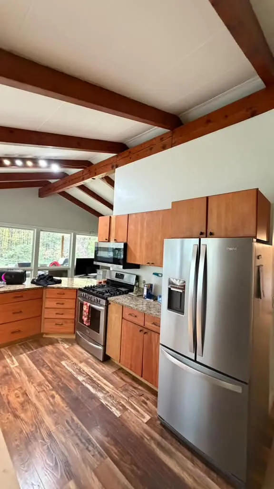
103 fotos revisadas. 11 originais selecionadas, 6 cards preparados e 1 imagem ilustrativa gerada. Clique em qualquer foto para abrir o WebP completo.
Seleção conservadora de nitidez, composição e limpeza. Os originais estão preservados. As imagens reais mantêm as cores e o conteúdo fotografado.
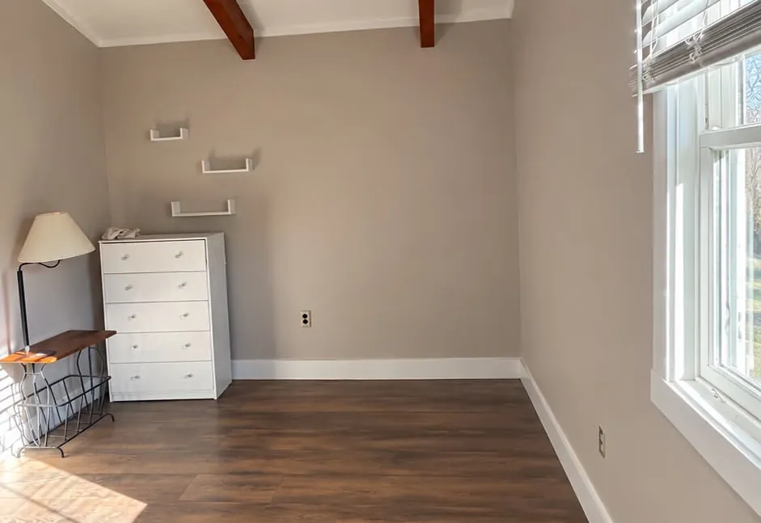
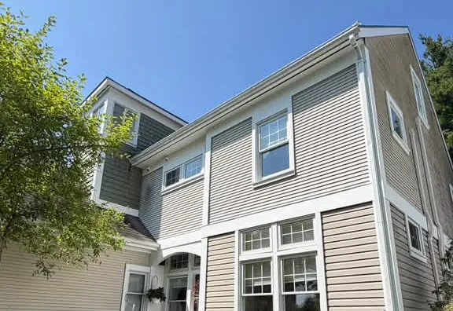
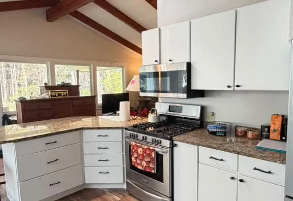
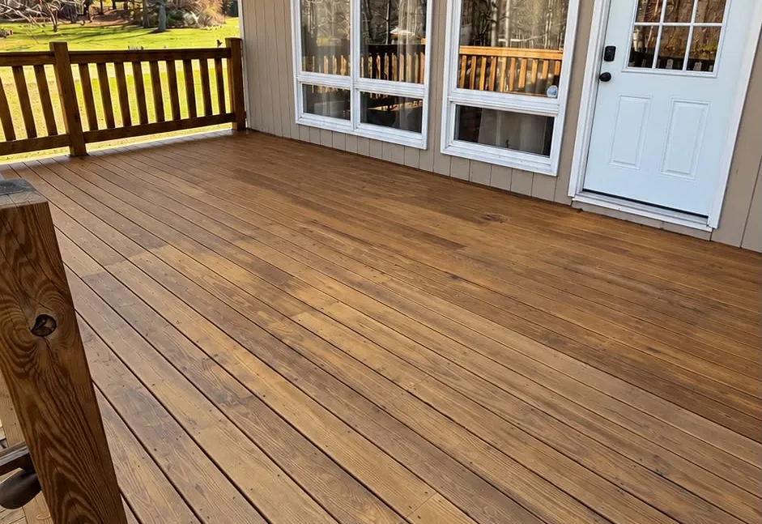
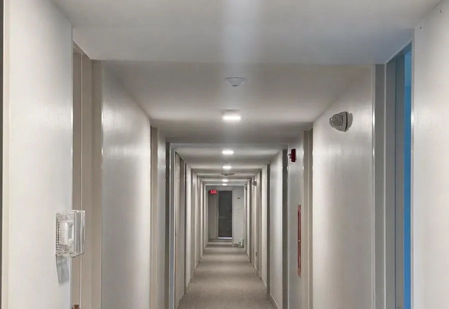
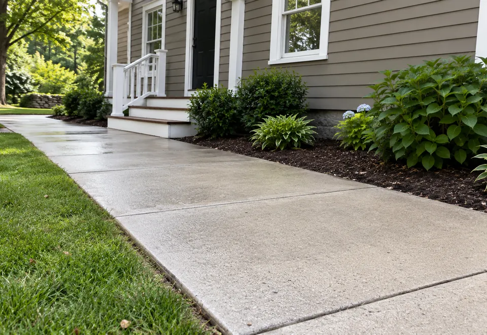
Power Washing usa imagem ilustrativa gerada por IA, separada das fotos de projetos reais.
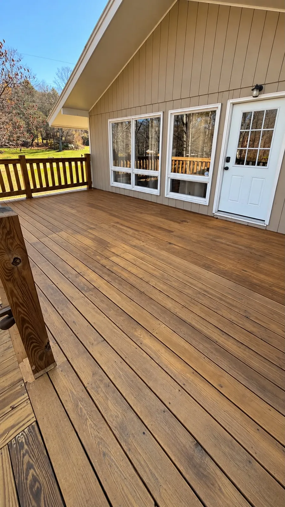
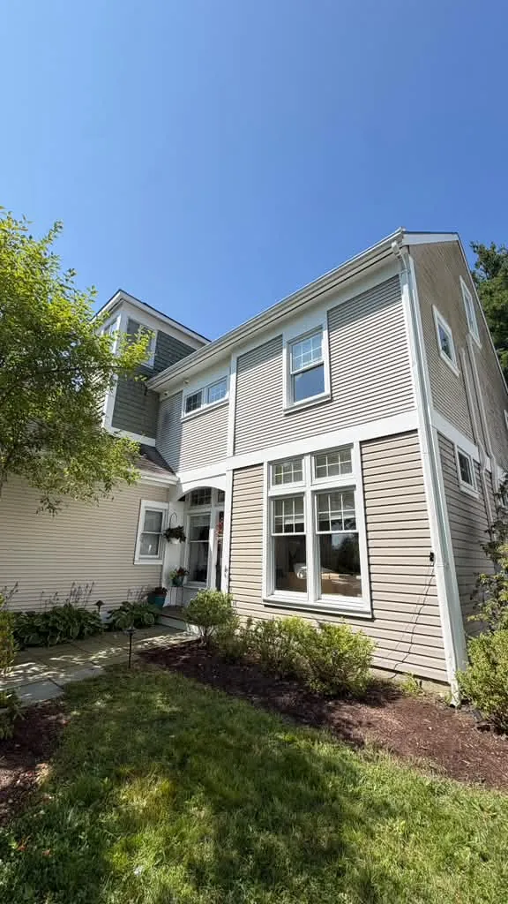
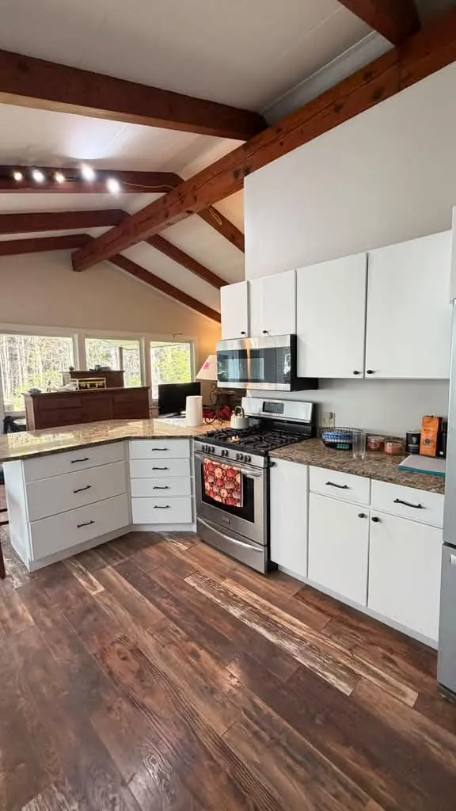
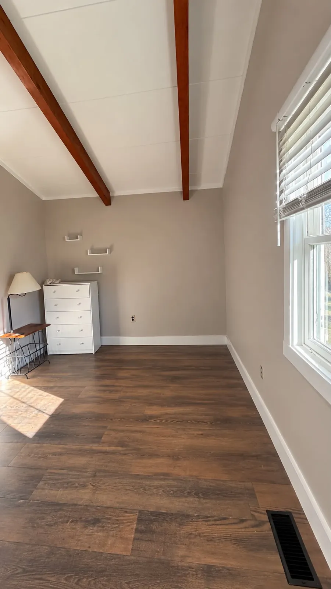
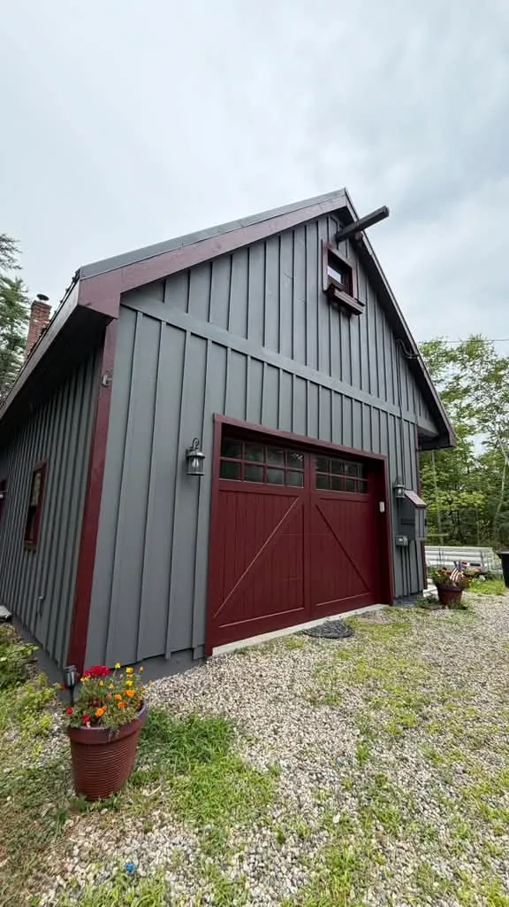
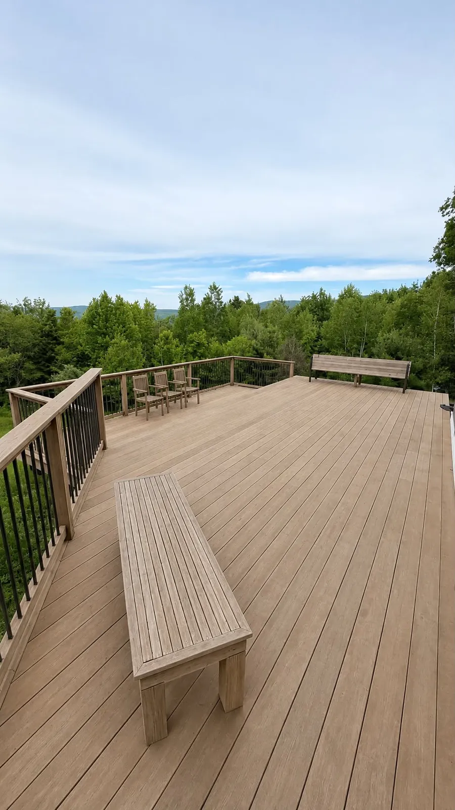
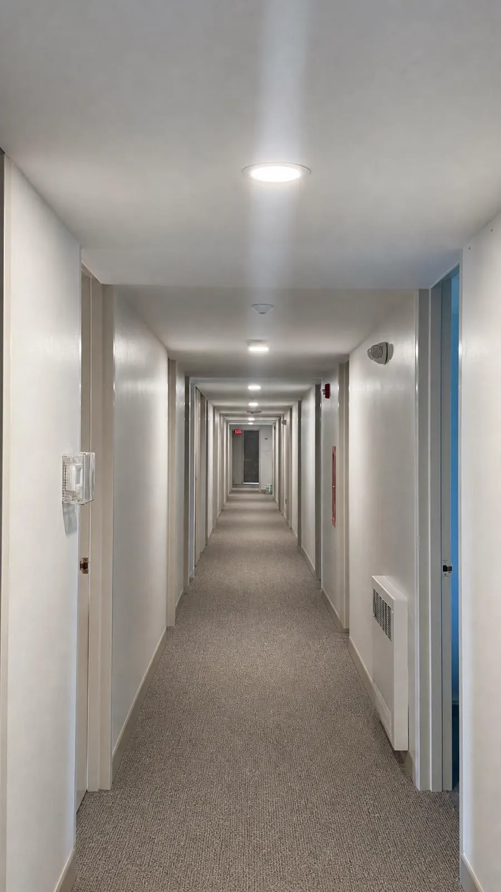
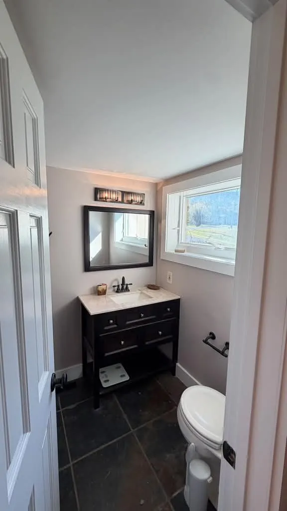
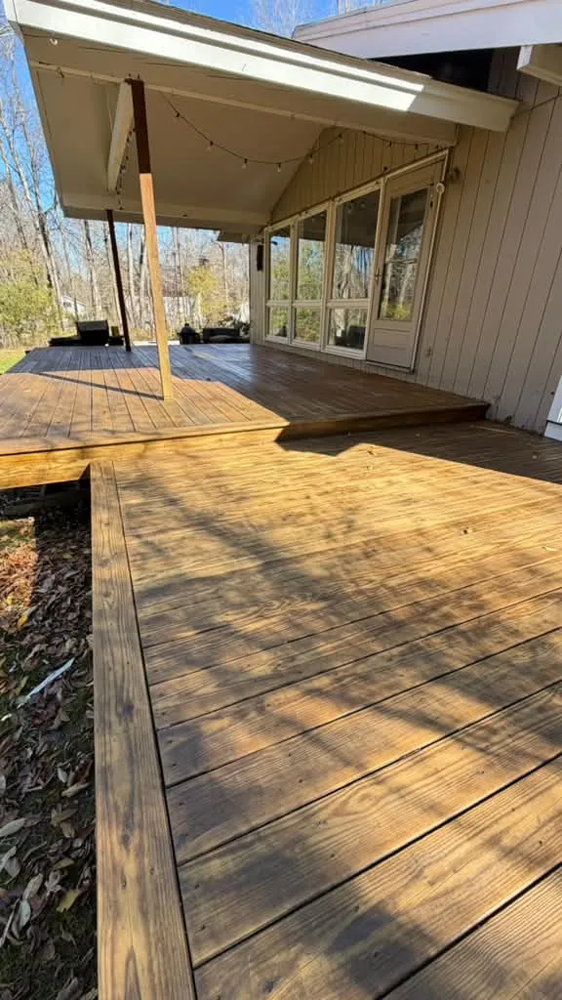
Mesmo ambiente, ângulos diferentes. Comparação lado a lado; não usar slider sobreposto.

Par sugerido. Mesmo deck; ordem inferida pela aparência do acabamento e precisa de confirmação. Ângulos e iluminação diferentes.
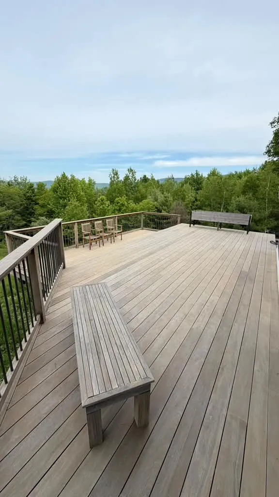